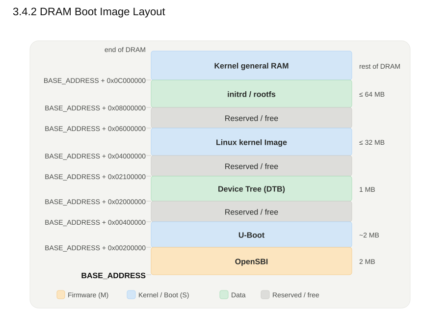

3.4.1 Overview
Toàn bộ software stack dùng một memory map cố định.Tất cả địa chỉ nạp của OpenSBI, U-Boot, Linux kernel, DTB và rootfs đều được cấu hình thông qua Device Tree và biến môi trường U-Boot. Các địa chỉ này không được hardcode trong mã nguồn, giúp đảm bảo tính linh hoạt, khả năng tái sử dụng binary và đơn giản hóa quá trình chuyển đổi giữa các nền tảng FPGA và ASIC.
3.4.2 DRAM Boot Image Layout

3.4.3 Reserved Regions
Các vùng kernel không được cấp phát tự do được khai báo qua node /reserved-memory trong DTB:
| Vùng | Base | Kích thước | Mục đích |
|---|---|---|---|
| OpenSBI runtime | 0x8000_0000 |
2 MB | Firmware M-mode còn cư trú để phục vụ SBI call; bảo vệ thêm bằng PMP. |
| Accelerator DMA pool (CMA) | Theo ICD | 128–256 MB | Buffer contiguous cho DMA-BUF zero-copy ISP → NPU → LPU. |
OpenSBI runtime: Vùng này phải được đánh dấu reserved; nếu không, kernel có thể ghi đè firmware và gây crash khi gọi SBI.
DMA pool: Buffer phải liên tục trong bộ nhớ vật lý (contiguous) vì accelerator truy cập DRAM qua AXI bằng địa chỉ vật lý, không qua MMU. Kích thước được chốt theo yêu cầu buffer của NPU/LPU/ISP trong ICD.
3.4.4 MMIO / Peripheral Address Space
Không gian MMIO tách biệt với DRAM (địa chỉ thấp). Mọi base address và IRQ do HW team định nghĩa trong ICD-CVA6-HW-001 và khai báo trong DTB; bảng dưới chỉ là các block chuẩn:
| Block | Base (typ) | DTS compatible | Ghi chú |
|---|---|---|---|
| CLINT | 0x0200_0000 |
riscv,clint0 |
M-mode timer + IPI |
| PLIC | 0x0C00_0000 |
riscv,plic0 |
External interrupt controller |
| UART (console) | ICD-defined | ns16550a |
stdout-path trong chosen |
| NPU / LPU / ISP | ICD-defined | custom | Register bank + IRQ từ ICD |